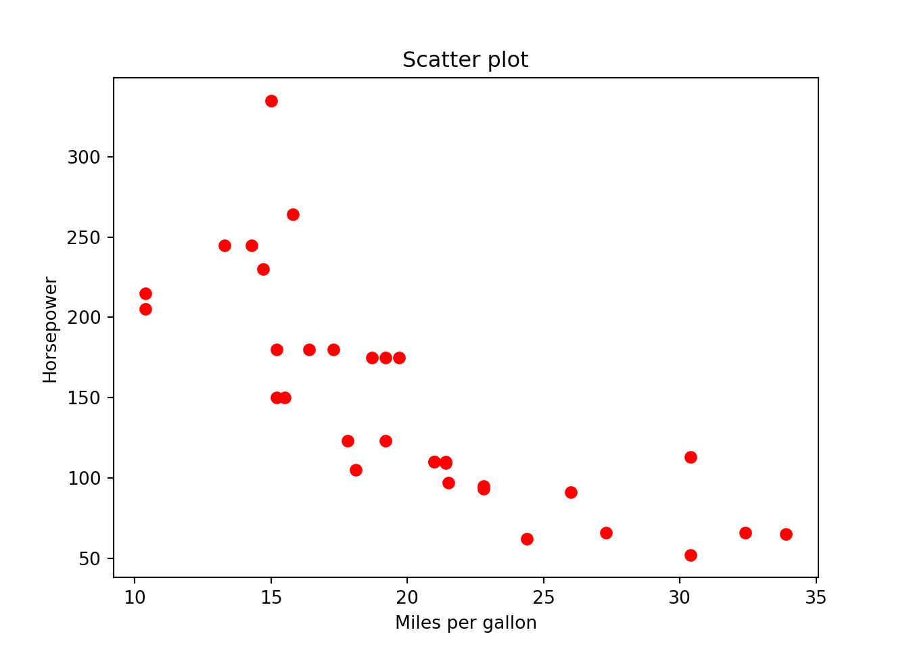
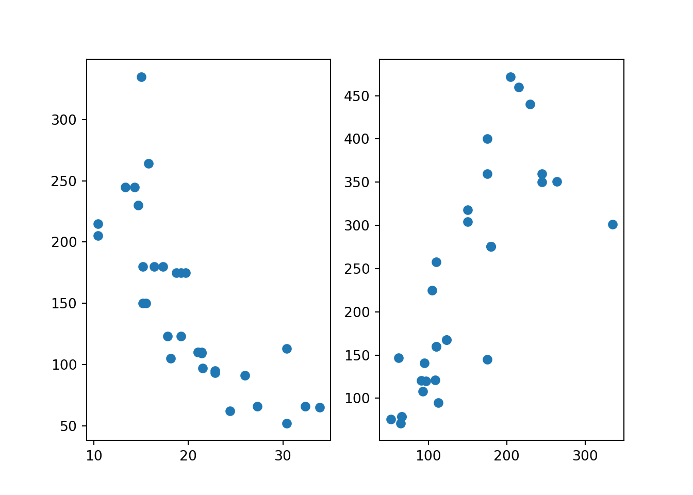
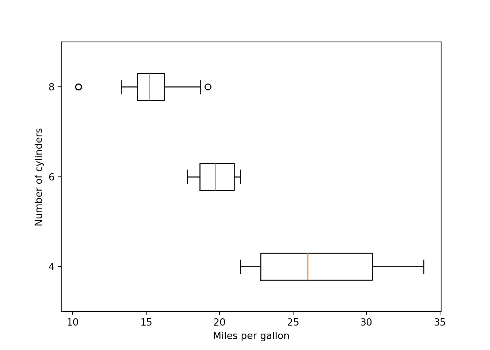
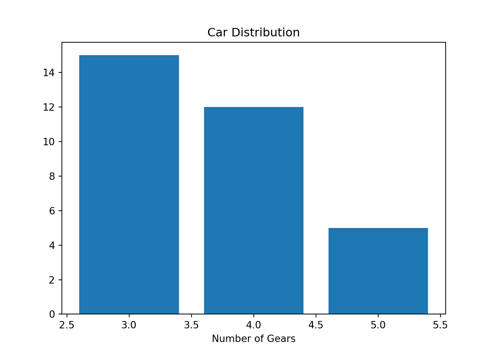
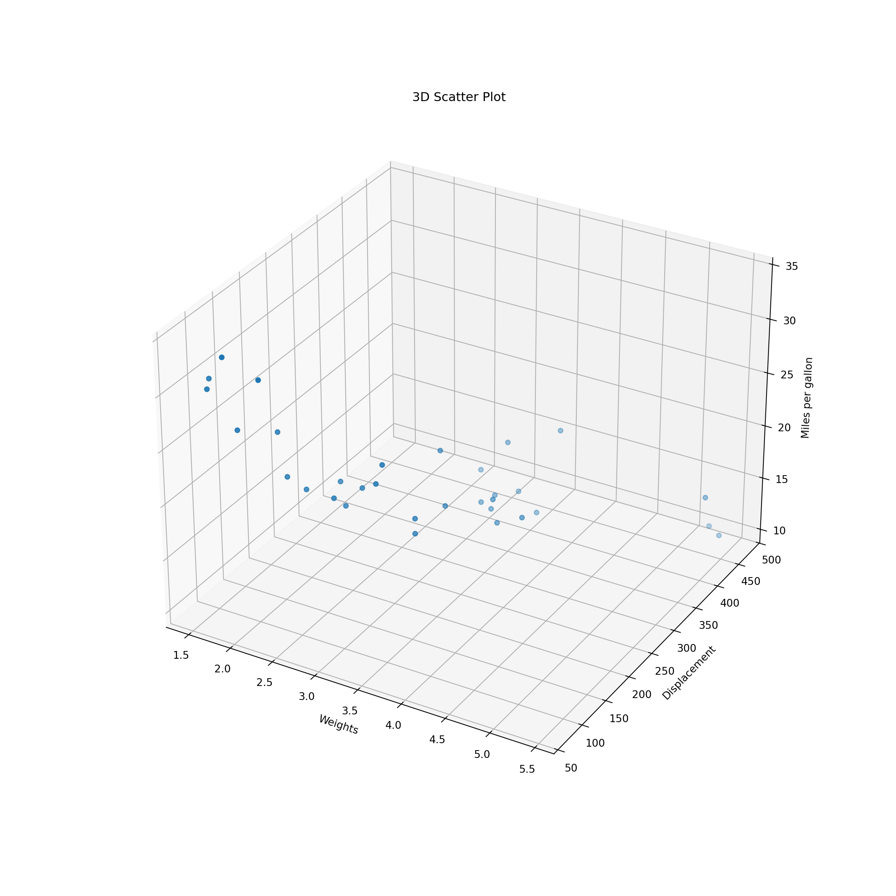

library(reticulate)Warning: package 'reticulate' was built under R version 4.5.2library(reticulate)Warning: package 'reticulate' was built under R version 4.5.2py_install("numpy")
py_install("pandas")
py_install("matplotlib")import numpy as np
import pandas as pd
import matplotlib.pyplot as plt2 + 3 / (5 * 4) ** 22.00755 == 5.00True5 == int(5)Truetype(int(5))<class 'int'>not True == FalseTruebool() converts nonzero numbers to True and zero to False
-5 | 0-51 & 11bool(2) | bool(0)TrueNeed to import math library in Python.
import math
math.sqrt(144)12.0math.exp(1)2.718281828459045math.sin(math.pi/2)1.0math.log(32, 2)5.0abs(-7)7# python commentx = 5
x5x = x + 6
x11x == 5Falsemath.log(x)2.3978952727983707str, float, int and bool.
type(5.0)<class 'float'>type(5)<class 'int'>type("I_love_data_science!")<class 'str'>type(1 > 3)<class 'bool'>type(5) is floatFalse[].lst_num = [0, 2, 4]
lst_num[0, 2, 4]type(lst_num)<class 'list'>len(lst_num)3List elements can have different types!
lst = ['data', 'math', 34, True]
lst['data', 'math', 34, True]0: the 1st elementlst['data', 'math', 34, True]lst[0]'data'type(lst[0]) ## not a list<class 'str'>-1: the last elementlst[-2]34[a:b]: the (a+1)-th to b-th elementslst[1:4]['math', 34, True]type(lst[1:4]) ## a list<class 'list'>[a:]: elements from the (a+1)-th to the lastlst[2:][34, True]What does lst[0:1] return? Is it a list?
lst[1]'math'lst[1] = "stats"
lst['data', 'stats', 34, True]lst[2:] = [False, 77]
lst['data', 'stats', False, 77]If we change any element value in a list, the list itself will be changed as well.
list.method()This is a common syntax in Python. We start with a Python object of some type, then type dot followed by any method specifically for this particular data type or structure for operations.
## Concatenation
lst_num + lst[0, 2, 4, 'data', 'stats', False, 77]## Repetition
lst_num * 3 [0, 2, 4, 0, 2, 4, 0, 2, 4]## Membership
34 in lstFalse## Appends "cat" to lst
lst.append("cat")
lst['data', 'stats', False, 77, 'cat']## Removes and returns last object from list
lst.pop()'cat'lst['data', 'stats', False, 77]## Removes object from list
lst.remove("stats")
lst['data', False, 77]## Reverses objects of list in place
lst.reverse()
lst[77, False, 'data']Tuples work exactly like lists except they are immutable, i.e., they can’t be changed in place.
To create a tuple, we use ().
tup = ('data', 'math', 34, True)
tup('data', 'math', 34, True)type(tup)<class 'tuple'>len(tup)4tup[2:](34, True)tup[-2]34tup[1] = "stats" ## does not work!
# TypeError: 'tuple' object does not support item assignmenttup('data', 'math', 34, True)Lists have more methods than tuples because lists are more flexible.
# Converts a list into tuple
tuple(lst_num)(0, 2, 4)# number of occurance of "data"
tup.count("data")1# first index of "data"
tup.index("data")0A dictionary consists of key-value pairs.
A dictionary is mutable, i.e., the values can be changed in place and more key-value pairs can be added.
To create a dictionary, we use {"key name": value}.
The value can be accessed by the key in the dictionary.
dic = {'Name': 'Ivy', 'Age': 7, 'Class': 'First'}dic['Age']7dic['age'] ## does not workdic['Age'] = 9
dic['Class'] = 'Third'
dic{'Name': 'Ivy', 'Age': 9, 'Class': 'Third'}dic1 = {'Name': 'Ivy', 'Age': 7, 'Name': 'Liya'}
dic1['Name']'Liya'Keys are unique and immutable.
A key can be a tuple, but CANNOT be a list.
## The first key is a tuple!
dic2 = {('First', 'Last'): 'Ivy Lee', 'Age': 7}
dic2[('First', 'Last')]'Ivy Lee'## does not work
dic2 = {['First', 'Last']: 'Ivy Lee', 'Age': 7}
dic2[['First', 'Last']]dic{'Name': 'Ivy', 'Age': 9, 'Class': 'Third'}## Returns list of dictionary dict's keys
dic.keys()dict_keys(['Name', 'Age', 'Class'])## Returns list of dictionary dict's values
dic.values()dict_values(['Ivy', 9, 'Third'])## Returns a list of dict's (key, value) tuple pairs
dic.items()dict_items([('Name', 'Ivy'), ('Age', 9), ('Class', 'Third')])## Adds dictionary dic2's key-values pairs in to dic
dic2 = {'Gender': 'female'}
dic.update(dic2)
dic{'Name': 'Ivy', 'Age': 9, 'Class': 'Third', 'Gender': 'female'}## Removes all elements of dictionary dict
dic.clear()
dic{}Python built-in data structures are not specifically for data science.
To use more data science friendly functions and structures, such as array or data frame, Python relies on packages NumPy and pandas.
In your RStudio project, run
library(reticulate)
virtualenv_create("myenv")Go to Tools > Global Options > Python > Select > Virtual Environments
You may need to restart R session. Do it, and in the new R session, run
library(reticulate)
py_install(c("numpy", "pandas", "matplotlib"))Run the following Python code, and make sure everything goes well.
import numpy as np
import pandas as pd
v1 = np.array([3, 8])
v1
df = pd.DataFrame({"col": ['red', 'blue', 'green']})
dfpandas is a Python library that provides data structures, manipulation and analysis tools for data science.
import numpy as np
import pandas as pd# import pandas as pd
a = [1, 7, 2]
s = pd.Series(a)
print(s)0 1
1 7
2 2
dtype: int64print(s[0])1## index used as naming
s = pd.Series(a, index = ["x", "y", "z"])
print(s)x 1
y 7
z 2
dtype: int64print(s["y"])7grade = {"math": 99, "stats": 97, "cs": 66}
s = pd.Series(grade)
print(s)math 99
stats 97
cs 66
dtype: int64grade = {"math": 99, "stats": 97, "cs": 66}
## index used as subsetting
s = pd.Series(grade, index = ["stats", "cs"])
print(s)stats 97
cs 66
dtype: int64How do we create a named vector in R?
grade <- c("math" = 99, "stats" = 97, "cs" = 66)data = {"math": [99, 65, 87], "stats": [92, 48, 88], "cs": [50, 88, 94]}
df = pd.DataFrame(data)
print(df) math stats cs
0 99 92 50
1 65 48 88
2 87 88 94df.index = ["s1", "s2", "s3"]
df.columns = ["Math", "Stat", "CS"]
df Math Stat CS
s1 99 92 50
s2 65 48 88
s3 87 88 94[] returns Series, [[]] returns DataFrame![] returns tibble/data frame, [[]] returns vector!By Names
## Series
df["Math"]s1 99
s2 65
s3 87
Name: Math, dtype: int64type(df["Math"])<class 'pandas.core.series.Series'>By Index
# ## DataFrame
df[["Math"]] Math
s1 99
s2 65
s3 87type(df[["Math"]])<class 'pandas.core.frame.DataFrame'>df[["Math", "CS"]] Math CS
s1 99 50
s2 65 88
s3 87 94isinstance(df[[“Math”]], pd.DataFrame)
DataFrame.ilocdf Math Stat CS
s1 99 92 50
s2 65 48 88
s3 87 88 94## first row Series
df.iloc[0] Math 99
Stat 92
CS 50
Name: s1, dtype: int64## first row DataFrame
df.iloc[[0]] Math Stat CS
s1 99 92 50## first 2 rows
df.iloc[[0, 1]] Math Stat CS
s1 99 92 50
s2 65 48 88## 1st and 3rd row
df.iloc[[True, False, True]] Math Stat CS
s1 99 92 50
s3 87 88 94DataFrame.ilocdf Math Stat CS
s1 99 92 50
s2 65 48 88
s3 87 88 94## (1, 3) row and (1, 3) col
df.iloc[[0, 2], [0, 2]] Math CS
s1 99 50
s3 87 94## all rows and 1st col
df.iloc[:, [True, False, False]] Math
s1 99
s2 65
s3 87df.iloc[0:2, 1:3] Stat CS
s1 92 50
s2 48 88DataFrame.locAccess a group of rows and columns by label(s)
df Math Stat CS
s1 99 92 50
s2 65 48 88
s3 87 88 94df.loc['s1', "CS"]50## all rows and 1st col
df.loc['s1':'s3', [True, False, False]] Math
s1 99
s2 65
s3 87df.loc['s2', ['Math', 'Stat']]Math 65
Stat 48
Name: s2, dtype: int64DataFrame.iat/ DataFrame.atdf Math Stat CS
s1 99 92 50
s2 65 48 88
s3 87 88 94df.iat[1, 2]88df.iloc[0].iat[1]92df.at['s2', 'Stat']48df.loc['s1'].at['Stat']92DataFrame.insert and new rows pd.concatdf Math Stat CS
s1 99 92 50
s2 65 48 88
s3 87 88 94df.insert(loc = 2,
column = "Chem",
value = [77, 89, 76])
df Math Stat Chem CS
s1 99 92 77 50
s2 65 48 89 88
s3 87 88 76 94df1 = pd.DataFrame({
"Math": 88,
"Stat": 99,
"Chem": 0,
"CS": 100
}, index = ['s4'])pd.concat(objs = [df, df1]) Math Stat Chem CS
s1 99 92 77 50
s2 65 48 89 88
s3 87 88 76 94
s4 88 99 0 100pd.concat(objs = [df, df1],
ignore_index = True)NumPy is used to work with arrays/matrices.
The array object in NumPy is called ndarray.
Use array() to create an array.
range(0, 5, 1) # a seq of number from 0 to 4 with increment of 1range(0, 5)list(range(0, 5, 1))[0, 1, 2, 3, 4]import numpy as np
arr = np.array(range(0, 5, 1)) ## One-dim array
arrarray([0, 1, 2, 3, 4])type(arr)<class 'numpy.ndarray'>np.arange: Efficient way to create a one-dim array of sequence of numbersnp.arange(2, 5)array([2, 3, 4])np.arange(6, 0, -1)array([6, 5, 4, 3, 2, 1])np.array([[1, 2, 3], [4, 5, 6]])array([[1, 2, 3],
[4, 5, 6]])np.array([[[1, 2, 3], [4, 5, 6]], [[1, 2, 3], [4, 5, 6]]])array([[[1, 2, 3],
[4, 5, 6]],
[[1, 2, 3],
[4, 5, 6]]])np.reshape()arr2 = np.arange(8).reshape(2, 4)
arr2array([[0, 1, 2, 3],
[4, 5, 6, 7]])arr2.shape (2, 4)arr2.ndim2arr2.size8a = np.array([1, 2, 3, 4]).reshape(2, 2)
b = np.array([5, 6, 7, 8]).reshape(2, 2)
np.vstack((a, b))array([[1, 2],
[3, 4],
[5, 6],
[7, 8]])np.hstack((a, b))array([[1, 2, 5, 6],
[3, 4, 7, 8]])pch = np.array(['.', ',', 'o', 'v', '^', '<', '>', '1', '2', '3', '4', '8', 's', 'p', 'P', '*', 'h', 'H', '+', 'x', 'X', 'D', 'd', '|', '_'])
#all types of maker
pch_len = pch.shape[0]
x = np.array([i for i in range(1, pch_len+1)])
y = np.ones(pch_len)plt.figure(0)
for i in range(0, pch_len):
plt.plot(x[i],y[i],pch[i])
mtcars = pd.read_csv('./data/mtcars.csv')
mtcars.iloc[0:15,0:4] mpg cyl disp hp
0 21.0 6 160.0 110
1 21.0 6 160.0 110
2 22.8 4 108.0 93
3 21.4 6 258.0 110
4 18.7 8 360.0 175
5 18.1 6 225.0 105
6 14.3 8 360.0 245
7 24.4 4 146.7 62
8 22.8 4 140.8 95
9 19.2 6 167.6 123
10 17.8 6 167.6 123
11 16.4 8 275.8 180
12 17.3 8 275.8 180
13 15.2 8 275.8 180
14 10.4 8 472.0 205import matplotlib.pyplot as plt
plt.scatter(x = mtcars.mpg, y = mtcars.hp, color = "r")
plt.xlabel("Miles per gallon")
plt.ylabel("Horsepower")
plt.title("Scatter plot")
The command plt.scatter() is used for creating one single plot. If multiple subplots are wanted in one single call, one can use the format
fig, (ax1, ax2) = plt.subplots(1, 2)
ax1.scatter(x, y)
ax2.plot(x, y)fig, (ax1, ax2) = plt.subplots(1, 2)
ax1.scatter(x = mtcars.mpg, y = mtcars.hp)
ax2.scatter(x = mtcars.hp, y = mtcars.disp)
plt.subplots for more details.cyl_index = np.sort(np.unique(np.array(mtcars.cyl)))
cyl_shape = cyl_index.shape[0]
cyl_list = []
for i in range (0, cyl_shape):
cyl_list.append(np.array(mtcars[mtcars.cyl == cyl_index[i]].mpg))plt.boxplot(cyl_list, vert=False, tick_labels=[4, 6, 8]){'whiskers': [<matplotlib.lines.Line2D object at 0x338780140>, <matplotlib.lines.Line2D object at 0x338780440>, <matplotlib.lines.Line2D object at 0x338781520>, <matplotlib.lines.Line2D object at 0x338781820>, <matplotlib.lines.Line2D object at 0x338782930>, <matplotlib.lines.Line2D object at 0x338782c60>], 'caps': [<matplotlib.lines.Line2D object at 0x338780740>, <matplotlib.lines.Line2D object at 0x338780a10>, <matplotlib.lines.Line2D object at 0x338781af0>, <matplotlib.lines.Line2D object at 0x338781df0>, <matplotlib.lines.Line2D object at 0x338782f30>, <matplotlib.lines.Line2D object at 0x338783260>], 'boxes': [<matplotlib.lines.Line2D object at 0x33874fe90>, <matplotlib.lines.Line2D object at 0x3387811f0>, <matplotlib.lines.Line2D object at 0x338782630>], 'medians': [<matplotlib.lines.Line2D object at 0x338780d40>, <matplotlib.lines.Line2D object at 0x3387820c0>, <matplotlib.lines.Line2D object at 0x3387834a0>], 'fliers': [<matplotlib.lines.Line2D object at 0x338781010>, <matplotlib.lines.Line2D object at 0x338782390>, <matplotlib.lines.Line2D object at 0x338783740>], 'means': []}plt.xlabel("Miles per gallon")
plt.ylabel("Number of cylinders")
plt.hist(mtcars.wt,
bins = 19,
color="#003366",
edgecolor="#FFCC00")
plt.xlabel("weights")
plt.title("Histogram of weights")
count_py = mtcars.value_counts('gear')
count_pygear
3 15
4 12
5 5
Name: count, dtype: int64plt.bar(count_py.index, count_py)
plt.xlabel("Number of Gears")
plt.title("Car Distribution")
percent = round(count_py / sum(count_py) * 100, 2)
texts = [str(percent.index[k]) + " gear " + str(percent.array[k]) + "%" for k in range(0,3)]plt.pie(count_py, labels = texts, colors = ['r', 'g', 'b'])([<matplotlib.patches.Wedge object at 0x33860a3c0>, <matplotlib.patches.Wedge object at 0x33a0bf920>, <matplotlib.patches.Wedge object at 0x33a118fe0>], [Text(0.10781885436251686, 1.0947031993394165, '3 gear 46.88%'), Text(-0.6111272563215624, -0.9146165735327998, '4 gear 37.5%'), Text(0.9701133907831904, -0.5185364105085978, '5 gear 15.62%')])plt.title("Pie Charts")
In Python,
mat_img = np.reshape(np.array(range(1,31)), [6,5], "F")
mat_imgarray([[ 1, 7, 13, 19, 25],
[ 2, 8, 14, 20, 26],
[ 3, 9, 15, 21, 27],
[ 4, 10, 16, 22, 28],
[ 5, 11, 17, 23, 29],
[ 6, 12, 18, 24, 30]])plt.imshow(mat_img, cmap = 'Oranges')
volcano = pd.read_csv('./data/volcano.csv', index_col=0)
x = 10*np.arange(1,volcano.shape[0]+1)
y = 10*np.arange(1,volcano.shape[1]+1)
X,Y = np. meshgrid(x,y)
vt = volcano.transpose()
print(vt.shape)(61, 87)print(X.shape)(61, 87)print(Y.shape)(61, 87)fig, ax = plt.subplots()
IM = ax.matshow(vt, alpha =1, cmap='terrain')
CS = ax.contour(vt, levels=np.arange(90,200,5))
ax.clabel(CS, inline=True, fontsize=10)
ax.set_title('Maunga Whau Volcano')In Python,
fig = plt.figure(figsize=(12, 12))
ax = fig.add_subplot(projection='3d')
ax.scatter(xs = mtcars.wt, ys = mtcars.disp, zs = mtcars.mpg)
ax.set_xlabel('Weights')
ax.set_ylabel("Displacement")
ax.set_zlabel("Miles per gallon")
ax.set_title("3D Scatter Plot")
In Python,
x = 10*np.arange(1,volcano.shape[0]+1)
y = 10*np.arange(1,volcano.shape[1]+1)
vt = volcano.transpose()
Z = 10*vt
X,Y = np. meshgrid(x,y)
print(Z.shape)(61, 87)print(X.shape)(61, 87)print(Y.shape)(61, 87)fig, ax = plt.subplots(subplot_kw={"projection": "3d"})
# Plot the surface.
ax.plot_surface(X, Y, Z, cmap = 'Greens')
In python, NA, NaN and NULL are not that distinguishable, comparing to R.
NaN can be used as a numerical value on mathematical operations, while None cannot (or at least shouldn’t).
NaN is a numeric value, as defined in IEEE 754 floating-point standard.
None is an internal Python type (NoneType) and would be more like “inexistent” or “empty” than “numerically invalid” in this context.
a = np.array([None, 0.9, 10])
type(a)<class 'numpy.ndarray'>a == Nonearray([ True, False, False])len(a)3print(type(a[0]))<class 'NoneType'>None == NoneTrue'' == NoneFalsea1 = np.array([-1,0,1])/0<string>:1: RuntimeWarning: divide by zero encountered in divide
<string>:1: RuntimeWarning: invalid value encountered in dividea1array([-inf, nan, inf])math.isfinite(0)Truemath.isnan(float("nan"))Truepd.isna(float("nan"))Truenp.isnan(float("nan"))Truemath.isfinite(7.8/1e-307)Truemath.isfinite(7.8/1e-308)Falsetype(None)<class 'NoneType'>## TypeError: '>' not supported between instances of 'NoneType' and 'int'
None > 5## TypeError: object of type 'NoneType' has no len()
len(None)float("NaN") > 5Falsev_none = np.array([3, None, 5])
v_nonearray([3, None, 5], dtype=object)v_nan = np.array([3, float("NaN"), 5])
v_nanarray([ 3., nan, 5.])# TypeError: unsupported operand type(s) for +: 'int' and 'NoneType'
sum(v_none)sum(v_nan)nanif condition:
# code executed when condition is true
else:
# code executed when condition is falsea = 5
b = 20
if a > 4 or b > 4:
print('a > 4 or b > 4')a > 4 or b > 4if a > 4 and b > 4:
print('a > 4 and b > 4')a > 4 and b > 4if (a > 4) | (b > 4):
print('a > 4 or b > 4')a > 4 or b > 4if (a > 4) & (b > 4):
print('a > 4 and b > 4')a > 4 and b > 4if condition A:
# do that
elif condition B:
# do something else
else:
# rd = np.random.randint(100)
print(rd)70if rd <= 20:
print("rd <= 20")
elif rd > 20 and rd <= 40:
print('rd > 20 and rd <= 40')
elif rd > 40 and rd <= 60:
print('rd > 40 and rd <= 60')
elif rd > 60 and rd <= 80:
print('rd > 60 and rd <= 80')
elif rd > 80 and rd <= 100:
print('rd > 80 and rd <= 100')rd > 60 and rd <= 80def function_name(arg1, arg2, ...):
## body
return(something)def add_number(a, b):
c = a + b
return c
n1 = 9
n2 = 18
add_number(n1, n2)27Python
for value in that:
# do thisfor i in range(5):
print('for', i)for 0
for 1
for 2
for 3
for 4for i in ['My', '1st', 'for', 'loop']:
print(i)My
1st
for
loopwhile (condition):
# do thisi = 1
while(i < 5):
print('while',i)
i = i + 1while 1
while 2
while 3
while 4np.random.seed(86)
def flip():
return np.random.choice(['T','H'], 1)
flips = 0
nheads = 0
while(nheads < 3):
if flip() == "H":
nheads += 1
else:
nheads = 0
flips += 1
flips9